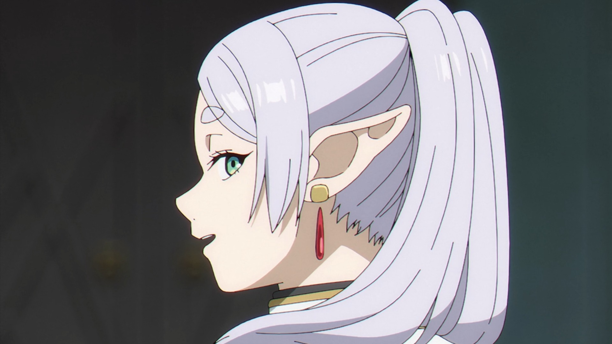

AN ADVENTURE SEEN IN RETROSPECT
Season 1 begins with an unusually powerful premise: the celebrated adventure is already over. Frieren, an elf whose life stretches far beyond that of her former companions, has not yet understood what the party meant to her. The return to the road therefore has two directions. There is a practical journey through a carefully imagined fantasy world, and there is an inward journey through memory. Small reunions become emotional landmarks because time has changed the people Frieren once thought she knew. The series trusts pauses, landscapes, and ordinary conversation to carry weight. That restraint gives its action a sharper purpose when danger arrives. A spell, a village, or a quiet meal can reveal as much about a character as a dramatic victory.
COMPANIONSHIP AS A SKILL
The season’s strongest development comes from the changing party around Frieren. Fern and Stark are not simply helpers attached to a powerful protagonist; their different temperaments force her to respond to the present instead of living only through recollection. Fern’s discipline gives the group structure, while Stark’s uncertainty makes courage feel earned rather than automatic. Frieren remains extraordinarily capable, but capability does not solve the problem of paying attention to other people. Training, travel, and difficult encounters gradually turn the party into a relationship rather than a formation. The fantasy setting supports this character work by making every destination feel connected to a larger history. Even its comic beats help the group feel lived-in. The season’s quiet achievement is making emotional literacy part of the adventure’s progression.
FINAL VERDICT
Season 1 is a thoughtful fantasy journey about the meaning that becomes visible only after time has passed. Its measured pacing, strong visual atmosphere, and precise character contrasts make it rewarding for viewers who value reflection alongside action. The series does not reject spectacle; it places spectacle inside a world where memory and mortality matter. Frieren’s central question is not whether a hero can defeat the next enemy, but whether she can recognize the people beside her while there is still time. That question gives the season a durable emotional centre.
CHECK OFFICIAL CRUNCHYROLL LISTING →